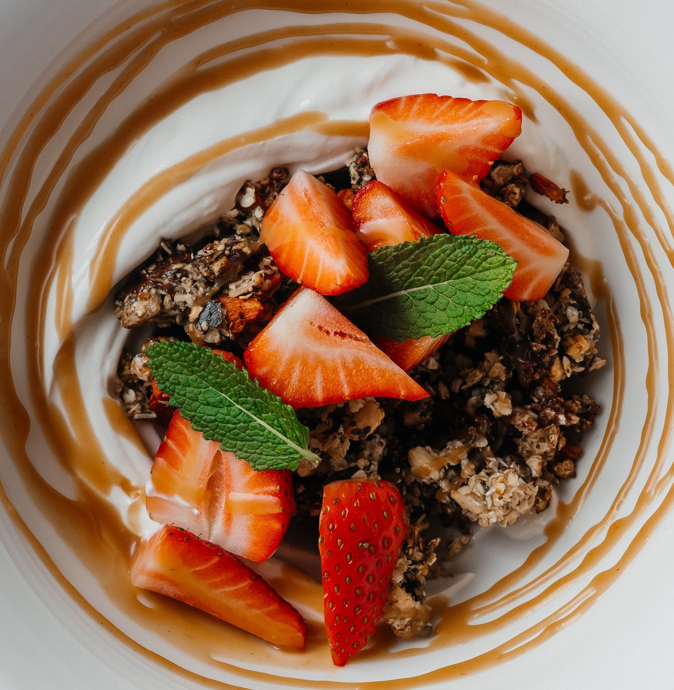

KIKU Bistro – ongedwongen eten, écht goed.
Ontbijt in de ochtend, bistrogerechten vanaf de middag en lekker eten tot in de avond. Jan Fribus en zijn team combineren vertrouwde gerechten met eigen ideeën, seizoensproducten en ambachtelijke kookkunst.
Veel maken we hier in de bistro zelf – van zuurdesembrood tot dessert. Daarnaast zijn er wisselende gerechten, goede koffie, geselecteerde wijnen en cocktails. Onze kaart blijft bewust in beweging – met het seizoen, de producten en de ideeën.
Ontbijt. Lunch. Diner. En alles daartussenin.
Steinbrücke 2, direct aan het marktplein in Quedlinburg.
We kijken uit naar jullie komst.

Versgebakken brood, fijne patisserie en uitgesproken smaken in een ontspannen sfeer.
Reserverenring
Reserverener een tafel bij Kiku Bistro.
Kies datum, tijd en aantal personen direct in het reserveringsformulier.
Duur Reserverenringen zijn gepland voor 2 uur.
Groepen Voor 5 of meer personen reserveert u telefonisch.
Telefoon +49 3946 4139064
KIKU Restaurant
Bijzondere avonden bij Restaurant KIKU.
Op een paar stappen van de bistro serveert Jan Fribus aan de Pölle 8 een menu voor bijzondere avonden: rustig, persoonlijk en met fijne Aziatische accenten.
Avondmenu Donderdag tot en met zondag vanaf 18:00
Adres Pölle 8, 06484 Quedlinburg
Elke dag aan de Steinbrücke, direct bij het marktplein.
Bonjour et bon appétit!
Wij kijken uit naar uw bezoek.
Steinbrücke 2
06484 Quedlinburg
Woensdag & zondag
9:30 - 17:00
Donderdag - zaterdag
9:30 - 21:00
Maandag - dinsdag
Gesloten